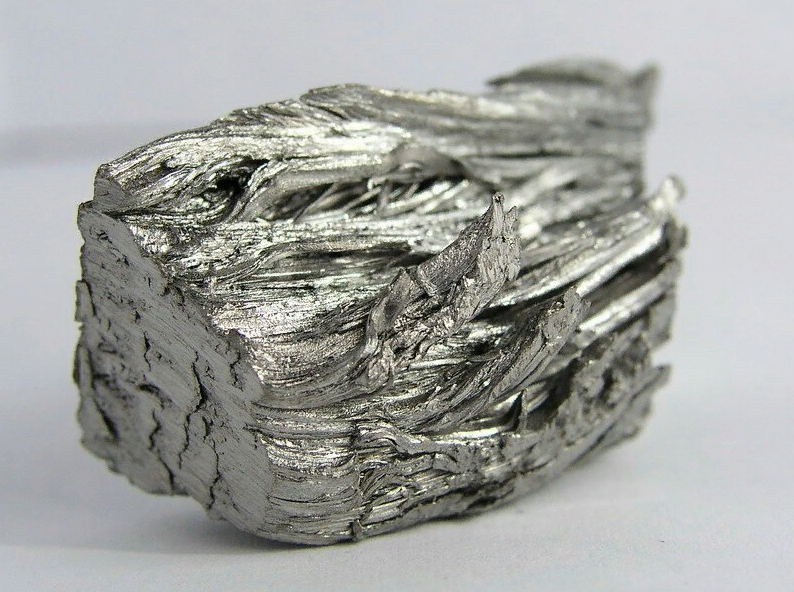

Палладий
Палла́дий (химический символ — Pd, от лат. Palladium) — химический элемент 10-й группы (по устаревшей классификации — побочной подгруппы восьмой группы, VIIIB), пятого периода периодической системы химических элементов Д. И. Менделеева, с атомным номером 46.
Элемент открыт в 1803 г. У. Х. Волластоном при исследовании самородной платины и назван в честь открытия астероида Паллады.
Получают палладий в процессе аффинажа платиновых концентратов, заключительной стадией которого выступает термическое разложение транс-изомера [Pd(NH3)2Cl2]. В свою очередь, платиновые концентраты получают из шламов электролиза никеля и меди. Годовое производство палладия в 2019 г. составило 210 т.

Главным производителем палладия в мире является Россия, определяющая также конъюнктуру рынка этого металла. Основные области применения палладия – катализ (палладиевые катализаторы применяются в химической и нефтехимической промышленности, в автомобильном транспорте для очистки выхлопных газов), электроника, электротехника, а также медицина (в частности, широко используются стоматологические палладийсодержащие сплавы). Перспективная область применения палладия – ювелирная промышленность.